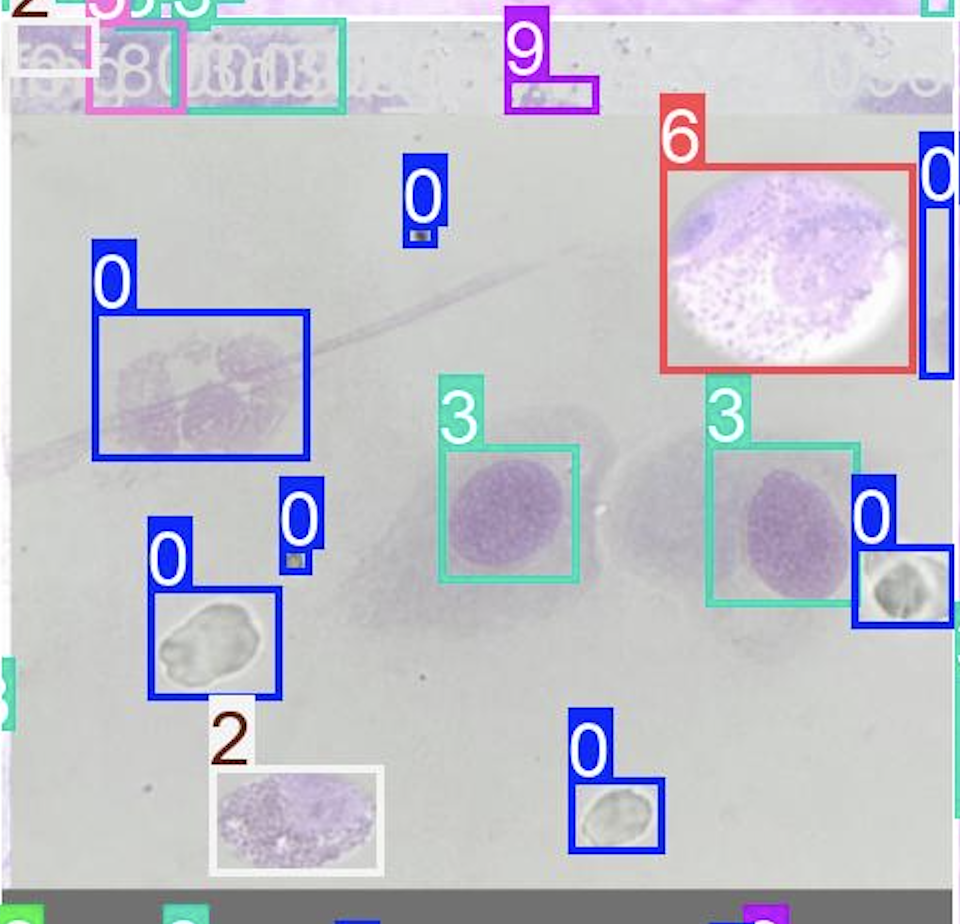

Type your headline here
One line about what this site showcases.
Machine Learning
In progress



Nasal Cytology Stain Object Detection
One-line project description goes here.
Emotion Classification Model
One-line project description goes here.
Neural Network From Scratch
One-line project description goes here.
Damped Harmonic Oscillation Predictor
One-line project description goes here.
Simulations


Games
Featured
Stryder
A sensor-driven smartwatch timing and data analysis app for sprinters and hurdlers. Stryder's approach detects strides and measures user location to keep a running distance total. I'm currently working on shipping v1.0 and aiming for under 7% relative MSE.
Expected v1.0 features:
- Heuristic approach to stride detection (ML-driven approach planned for later)
- Sensor fusion with GPS for more stability
- Simple graphs to track individual race performance
- 100m and 400m distances